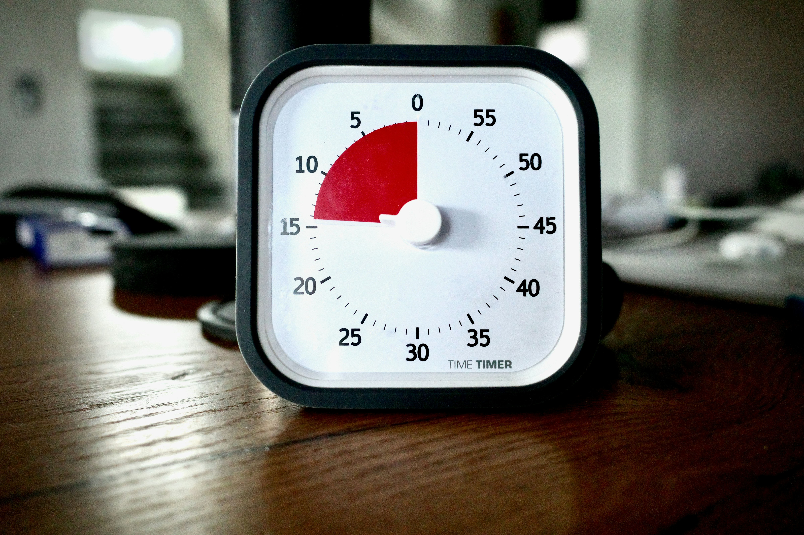
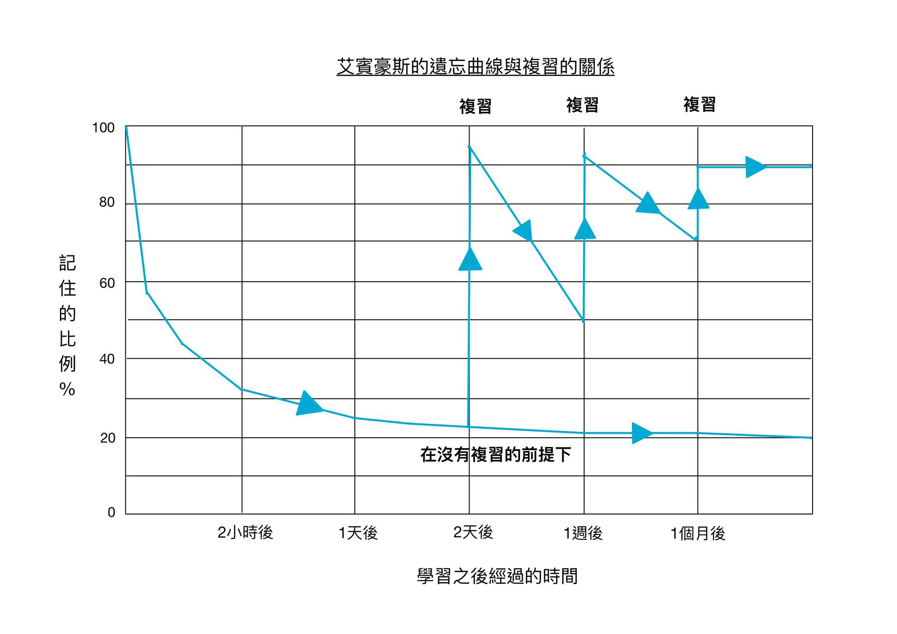

高效率讀書小貼士
同學們不妨先嘗試這些方法再決定補習的必要!
01. 費曼學習法

費曼學習法的基本原則是指當你學習一個新的概念或主題時，
可以將其分解成容易理解的部分，然後用簡單直觀的方式解釋給別人聽，
就好像在教授他們一樣。這種解釋的過程可以幫助你確保自己真正理解
了所學的內容。費曼學習法的優勢在於它強調理解和應用知識，
而不僅僅是單純地記憶，尤其適用於理科和數學科。
通過將知識用自己的話解釋給他人聽，你能夠更深入地思考和理解內容。
02. 蕃茄工作法

蕃茄工作法是一種時間管理方法，旨在提高效率和專注力。
其核心概念是將工作時間分為固定的時段(e.g. 25分鐘)，稱為「蕃茄」。
在每個蕃茄期間，你專注於單一的任務，並試圖在這段時間內達到最高效率。
完成一個蕃茄後，你可以休息一段短暫的時間(e.g. 5分鐘)。
當你完成一定數量的蕃茄後(e.g. 4個蕃茄)，
你可以休息更長的時間(e.g. 15-30分鐘)。透過將工作分為小的時間段，
你可以更專注、容易地管理時間並完成任務。此外，蕃茄工作法還提供了休息時間，
讓你在長時間工作後得到放鬆，以恢復精力。
03. 定期複習以鞏固知識

圖／天下文化提供
根據遺忘曲線，剛剛記憶早期的遺忘速度是最快的，
然後會逐漸減慢；研究亦發現如果能在遺忘過程中及時複習重温，
遺忘率會有明顯改善，甚至形成長期記憶。所以，
定期複習除了可以減輕在考試前「臨急抱佛腳」造成的壓力，
也能幫助自己牢牢記住所學。同學亦可以嘗試使用坊間一些flashcard手機應用程式，
以主動回憶(active recall)及反覆溫習，達至最有效的學習。
04. 善用網上資源

現時在各網上平台上(例如YouTube、Instagram等)，
有不少成績斐然的DSE考生或是老師免費分享考試資訊。
其包括課題講解、考試技巧、甚至制定溫習時間表的貼士等，
你可按照自己的需要參考相關資訊。在考慮是否需要補習時，
不妨先嘗試使用這些資源再決定。此外，
坊間亦有五花百門的應用程式能幫助更有效、
有效率的學習。不論是限制手機使用以幫助專注的、
生成梳理知識的心智圖的，還是學生之間互相交流、
解答課業問題的平台，都是同學們可以一試的學習輔助工具。
備注: 以上意見，僅供參考。